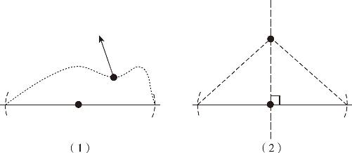
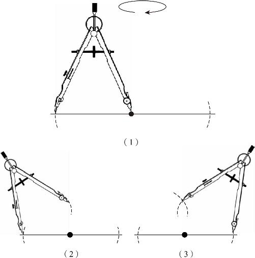
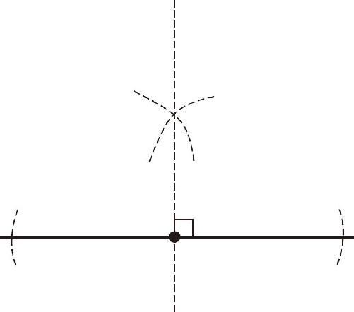

假设现在有块土地需要平分，我们找到了土地的一条边，现在需要在某一点上作出一条垂线，那么在手里只有细绳的条件下，我们应该怎么做呢？我们需要做的是确定角度，但是我们手里只有绳子，绳子只能确定长度，通过长度又怎么能确定角度呢？由于我们学习了三角形三边相等的全等定理，如果让三个固定长度的边围成一个三角形，就得到了固定的角度．假如这条线我们已经画出来了，那么它既然是垂线，左右两边的角度就都等于90°．这就是我们解决问题的思路，在需要90°的地方，作出两个全等的三角形来．
怎么构造呢？把土地上现成的一条边利用上，这两个三角形如果作出来，肯定是直角三角形，而且是背对背地坐在这条边上挨在一起的，那么它们背对背地这么一贴，中间的线肯定对应相等，中间的角又都是90°，只要底边也相等，这两个三角形就全等了！而且，这两个三角形背对背地一贴，就拼出了一个大的等腰三角形．可问题是，需要我们求的中间这条线，现在还没有，我们可以顺着这个思路寻找解决办法．
为了拼出一个大的等腰三角形来，可以先把这个大三角形的腰和底确定下来，通过给定的长度去画三角形，就能得到一样的结果．如果我们先以土地的分割点为中心，随便取一个长度，按照这个长度在这个土地的边上，在它的左右比量出一样长的两端来，做上两个标记，这就是等腰三角形底下的两个顶点；然后我们随意给定一对腰长，只要再弄一根长一点的线，把这个线中间一对折，就得到两条相等的腰了．我们捏住了中间的位置，把这个折线，往土地上一放，让这段绳子的两头分别和我们刚才找的那两个点对齐了，再把这根线抻直了，就构造出一个等腰三角形．把等腰三角形的顶点和底边中点一连线，这个线就垂直于底边．这是为什么呢？因为它左右两边这两个三角形，符合三边对应相等的条件：左右两条腰是相等的，下边的两个底也是相等的，中间又是一条公用边．三边都对应相等，所以它们肯定全等，因为全等，所以中间的角就相等；这两个角相加又等于180°，所以它们就都是直角．
如果把用绳子作垂线的方法挪到纸上去，就叫作尺规作图．尺规作图和绳子作垂线的原理是一样的，只不过具体的操作方法有点差别．比如，拿着绳子对折一下，就找到中点了，可是圆规和尺子不能折断，那怎么办？我们可以先把圆规的针脚扎到要作垂线的点上，然后以此为圆心画个圈，这个圈会和刚才的直线产生两个交点，这两个交点到中点的距离自然也就是等于半径的，于是我们就在要作垂线的这条直线上找到了两个点，如图6－1所示．

图6－1
这两个点就是我们要作的等腰三角形的两个底角的点，接下来，我们需要画等腰三角形的腰了，画腰时我们需要先把这个半径定得长一些，把圆规叉开的角度大一点，以这个长度为腰长．然后把圆规的针脚扎在左边这个底角的点上，保持腰长不变，在直线的上半部分，先画出一个圆弧来．显然，弧线上所有的点到左边底角的距离都等于我们用圆规叉开的腰长．
然后，我们再把这个圆规的针脚挪到右边的点上来，再画出同样大小的一个圆弧，这个圆弧上的所有点到右底角的距离肯定也等于腰长．这两个圆弧画出来以后，就又产生了一个交点（见图6－3），因为这个交点同时在两条弧线上，所以它到两个底角的距离，应该都等于同一个半径．最后我们连接这个交点和线段中点，就得到了原来直线的垂线，这就是通过尺规作图画已知直线的垂线的方法，背后的原理就是三角形三边相等的判定定理．
总结一下，过直线上一点作已知直线的垂线时，先以任意长为半径，过已知的垂足点作一个圆，这个圆与已知直线交于两点，然后分别以两个交点为中心，以更大的任意腰长为半径画弧（如图6－2所示），最后连接两条弧线的交点和直线上的已知点（如图6－3所示），就得到了所求的垂线．

图6－2

图6－3
掌握了作垂线的办法以后，希腊人终于摆脱了牛皮的束缚，可以自由地平分土地了．可是在前文中我们也提到了，大多数土地并不是方方正正的，如果已知角不是直角，能不能通过绳子作出一个大小一样的角呢？